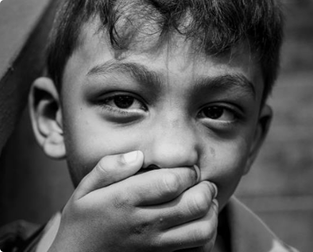

Sobre a Turma do Bem

A Raiz do Bem é uma plataforma digital criada para fortalecer a missão da Turma do Bem. Nosso objetivo é integrar em um só lugar triagens, cadastros e atendimentos, garantindo que cada sorriso seja cuidado com transparência, carinho e eficiência.
Assim como a TdB revolucionou o acesso à odontologia por meio do voluntariado, a Raiz do Bem inova ao levar essa experiência para o mundo digital, conectando pacientes, dentistas voluntários e gestão.
-
12
Países sendo atendidos pela Turma do Bem
-
85
Mil jovens tiveram seus sorrisos restaurados
-
1,2
Mil mulheres vítimas de agressão atendidas
-
18,5
Mil dentistas voluntários